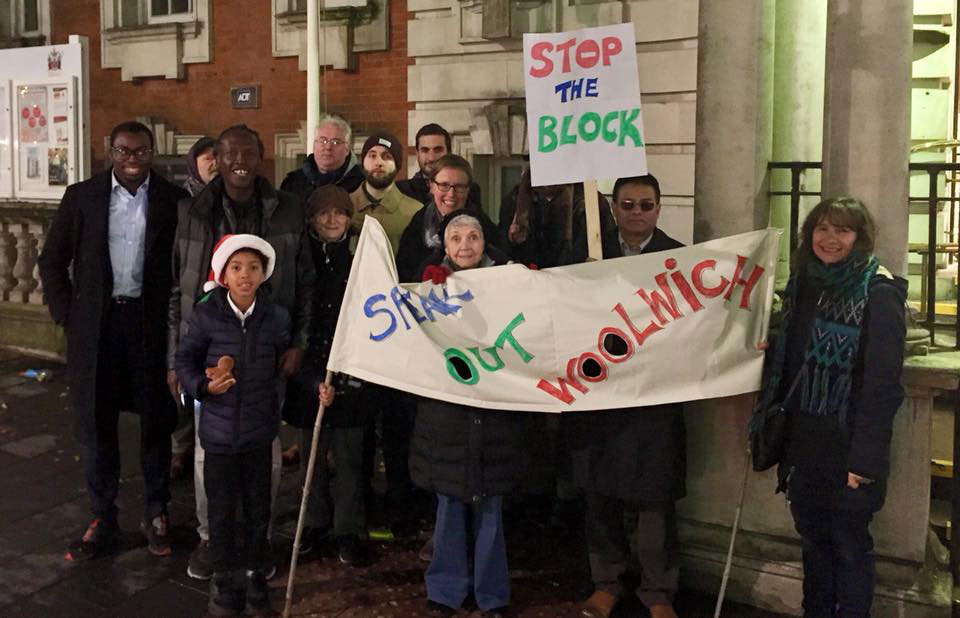

Welcome
Protesting at Woolwich Town Hall against the Meyer Homes 27-storey Tower.
Welcome to our website which is here to inform, and to help us campaign for a better Woolwich, one that our communities would like to see, rather than one imposed by developers and the Council.
Return of the Tower
Meyer Homes' plan for a 27-storey over-shadowing General Gordon Square was thrown out by the Housing and Communities minister in 2020, but the developer has returned, this time with a 15-storey tower to blight the General Gordon Square - Woolwich’s primary public space, by overshadowing it. It’s lazy architecturally and could easily become another contender for the Carbuncle Cup, which was awarded by Building Design magazine in 2014 for the Tesco Store and housing blocks behind.
This development offers very little for the community, and any London Affordable rented properties will be segregated from those for private rent or sale, built on the sunnyside of the site.
Speak Out Woolwich objects to the imposition of this tower, the primary aim of which seems aimed at maximising profits for Meyer Homes' shareholders. Read more here…